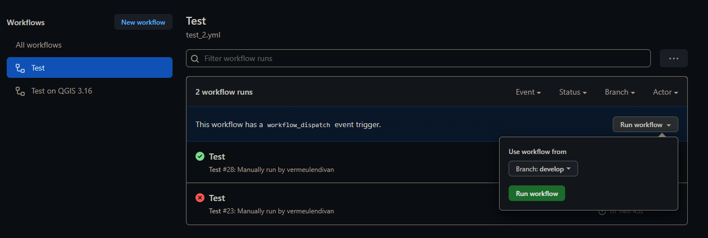
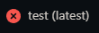
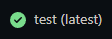
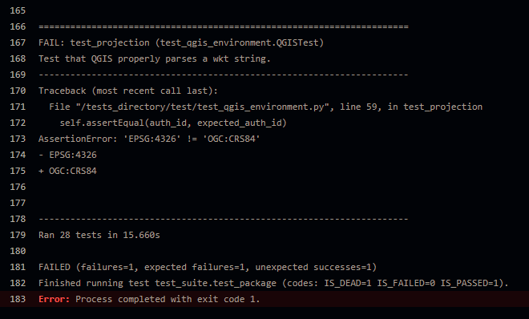
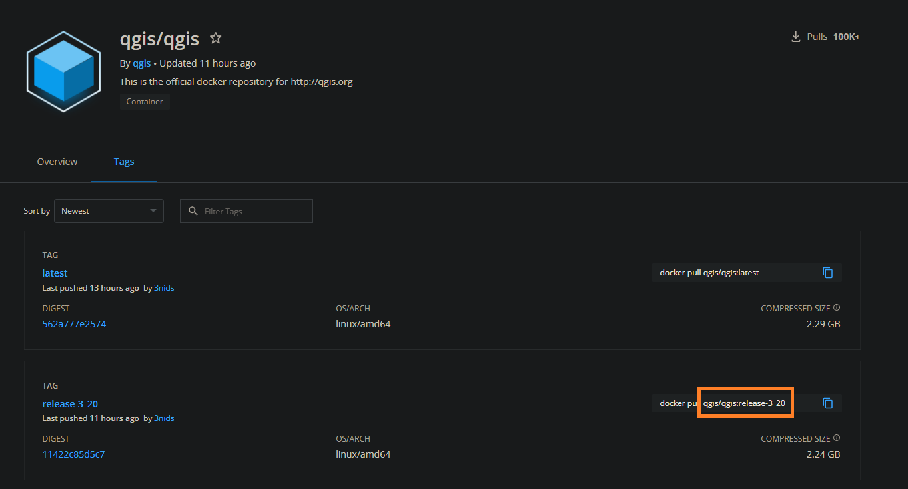

Testing the plugin¶
The plugin or changes to the plugin can be tested using gitHub Actions (https://github.com/kartoza/stream_feature_extractor/actions). Tests will be performed on each of the methods (e.g. feature extraction) by comparing the result to exisiting data in the ‘/test’ folder. The following QGIS versions are tested:
3.10;
3.12;
3.14;
3.16 LTR;
3.18;
3.20; and
latest version.
Manual testing¶
Tests can manually be performed, but the action should execute automatically. Here is the steps for manual execution:
On the repository click on the Actions tab, and select the ‘Test’ worksflow (will execute .github/workflows/test_2.yml);
Click on the Run workflow drop-down and select the Branch you want to perform the test on;
Click Run workflow;
Processing might take a while, especially if the docker images needs to be pulled;
If processing is done, check if the one of the jobs succeeded or failed.
Failed:

Success:

Failed¶
If the testing failed, the user needs to investigate the cause of the error. Here is a quick guide on how to do this:
Select the test which failed;
Select the job which failed (e.g. ‘test (release-3_16)’);
The user will be presented with the job steps. Select the job which failed (e.g. ‘Run test suite’);

A list of print lines will be shown, with the error at the end;

5. Investigate the code to which the error relates to the method performed during that test. Having a look at the data used for the test may also be useful.
Success¶
There should be no issue if the tests does not fail. The jobs will be similar to the following:

The plugin and any updates to the plugin should work with no issue for each of the QGIS versions in the above list.
Adding additional QGIS versions for testing¶
The user may want to add more or newer versions (which were originally not included in the job list) to the job list for testing. First the qgis/qgis DockerHub needs to be checked for the tags. This can be done as follows:
Click on the Tags tab;

The user will be presented with a page which lists all QGIS docker images with their associated tags (shown in red);
Copy the ‘release-version’ characters. ‘release-3_20’ for the QGIS version 3.20 in this example:

Now the user can add the tag to the workflow:
Go to ‘.github/workflows/test_2.yml’;
Click on the edit button (highlighted in red):

Add the copied tag to the ‘qgis_version_tag’ list:

Save/commit the change;
The testing will now be performed using the added QGIS version.